下取り額を聞く前に、まず買取の査定を取っておくのがおすすめです
販路や在庫需要、下取りと値引きの組み合わせ、契約後の減額条件を調べます。「買取のほうが必ず高い」と決めず、手間と確定金額を同じ条件で比べる回です。あわせて、売却前の実務準備や修復歴の境目、クーリング・オフ対象外の契約における減額要求・キャンセル料トラブルを防ぐ確認手順も整理します。
短編記事を読む

THE READING ROOM
姿や雰囲気、暮らしに合う選び方から入って、
関心が深まったら設計や中古市場、企業の裏側まで。
車を選ぶ時間が、もっと楽しくなる読み物を。
LATEST ARTICLE
No.023 公開済み「買取のほうが必ず高い」からではなく、手元に相場の物差しがないと損得が見えないから。下取りと値引きが混ざる仕組み、下取りでよい人の条件、契約前に確かめる3つのポイントを整理します。
最新の記事を読む · 約4分ほかの公開済み記事：No.001 ポルシェの特注色は、一人だけの色で終わらない / No.029 Gクラスを造る会社は、組み立てだけを請け負っているのか / No.003 中古車の店頭価格と買取相場の差は、どこへ消えるのか / No.025 エアサスペンションは、本当に「乗り心地が上質」と言い切れるのか / No.075 ランクル250・300・ディフェンダー110。自分が欲しくなるのはどれ？ / No.076 レクサスRXとボルボXC90。高級SUVで過ごしたいのは、どんな時間か / No.077 ポルシェ・カイエンとBMW X5。運転が好きな人は、何に惹かれるのか / No.019 マンションの平置きでポールを置けない。それでもランクルを選べるか？ / No.005 中古なら届くディフェンダー。安く買って、後悔しない境目は？ / No.020 ランクルとディフェンダー、維持費の差はどこで生まれる？ 新車5年の内訳で見る / No.013 ディフェンダー110の日本価格は本国より割高？ 英独と税金抜きで比べた / No.078 車検の見積で悩むのは「おすすめ整備」だけでいい / No.017 迷っているなら、残クレは選ばないほうがいい。現金か銀行ローンを推す3つの理由 / No.008 リセールが良い車が、安く乗れる車とは限らない——残価率より大事な引き算と足し算 · 公開日が新しい順の一覧（全15本）
EDITOR'S NOTE
まずは、欲しくなる一台を見つけるところから。
車の魅力と暮らしに合う選び方を入口に、関心が深まったら設計や中古市場、企業の裏側まで。調査で裏付けの取れた記事だけを届けます。
RECOMMENDED READING ORDER
入口の比較（5本） → 関心別の深掘り（10本）
まずは車の魅力と暮らしに合う選び方から入り、気になるテーマが見つかったら後ろの深掘り記事へ進める道筋です。公開日順の一覧は下のセクションで独立して確認できます。
見た目の雰囲気から夫婦の遠出、オーナーが語る好きな点と正直な苦労まで。3台の「魅力と引き換えに受け入れるもの」を比べる。
入口の記事から読む · 約5分その他の入口記事（全5本）
車選びの軸が見えてきたら、仕組みやお金・ものづくりの背景を一次資料で掘り下げた専門記事へ進めます。
PUBLISHED ARTICLES
全15本 · 初回公開日順
No.について：No.001〜No.084は企画を指定・評価するための固定番号であり、公開順や連載の話数を表すものではありません。裏付け調査が整った企画から公開するため、番号の若い順には進みません。この一覧では、公開済みの記事を公開日が新しい順に並べています。
項目がずらっと並んだ見積書を前に「高すぎる気がするけれど、どこを削っていいか分からない」と手が止まったときに。
本文を読む · 約4分「買取のほうが必ず高い」からではなく、手元に相場の物差しがないと損得が見えないから。下取りと値引きが混ざる仕組み、下取りでよい人の条件、契約前に確かめる3つのポイントを整理します。
本文を読む · 約4分300万円・5年の試算で見える約37万円の差と、残クレを選んでよい3つの境界線。
本文を読む · 約4分「高く売れる車なら結局お得」と思われがちですが、残価率のパーセントだけでは家計の負担は見えません。仮の例と税金・保険の仕組みから、買う前に足し算したい3つの数字を整理します。
本文を読む · 約4分円安のいま「海外より高く買わされているのでは」と感じたときに。JLR 2車種の税抜き本体価格、同額になる為替水準、値上げの記録を確かめます。
本文を読む · 約7分税金・燃料・点検・保証の内訳を、金額で並べます。自分の条件で計算できる式と、窓口で聞く項目も載せています。
本文を読む · 約13分週末の山道でハンドルを切る手応えから、夫婦の遠出、駐車場や装備選びの現実まで。走りにこだわる2台の大型SUVを、暮らす場面ごとに比べる。
本文を読む · 約5分2列5人乗りの静かなクルーザーか、3列7人乗りの北欧リビングか。見た目の空気感から夫婦の遠出、所有者が語る満足と納得すべき負担までを比べる。
本文を読む · 約5分固定障害物を使えない1階平置き駐車場で、何が残り、何を重ねるべきか。統計の読み方から純正・社外対策の組み合わせ、保険、管理組合・販売店・施工店へ聞く質問まで。
本文を読む · 約7分新車・認定中古・一般中古の価格差を「保証の中身・年式の壁・納車後の出費」でほどき、後悔しない買い方の境目を探る。
本文を読む · 約6分見た目の雰囲気から夫婦の遠出、オーナーが語る好きな点と正直な苦労まで。3台の「魅力と引き換えに受け入れるもの」を比べる。
本文を読む · 約5分マグナの受託製造を「どこまで引き受け、部品を誰が持ち、工場を出た後に誰が責任を負うか」から読む
本文を読む · 約4分空気ばねの気室切替、伸び・縮み独立の2バルブダンパー、ロール制御という別々の役割から読む
本文を読む · 約4分オークション手数料、支払総額のルール、そして付帯・金融収益の構造から読み解く
本文を読む · 約4分顧客が持ち込んだ見本から生まれた新色を、次の人の選択肢へ還流させるPaint to Sampleの仕組み
本文を読む · 約2分THE EDITORIAL LINEUP
特集 44本 / 車の基本紹介 27本 / 会社・ブランド 13本
No.は全企画共通の固定番号です。「No.003のテーマを深掘りして」のように評価・ご意見を伝えられます。「次の調査予定」は初期編成の候補です。掲載順・公開日は確約していません。日次の自動更新は準備中です。以下の紹介文は調査する論点であり、各車の仕様や評価を確認済みとするものではありません。
掲載順の案です。No.は固定の企画番号で、順番とは異なります。調査結果に応じて編成は変わります。
買い方・中古、設計、企業の思惑。ひとつの問いを、ひとつの記事に。
販路や在庫需要、下取りと値引きの組み合わせ、契約後の減額条件を調べます。「買取のほうが必ず高い」と決めず、手間と確定金額を同じ条件で比べる回です。あわせて、売却前の実務準備や修復歴の境目、クーリング・オフ対象外の契約における減額要求・キャンセル料トラブルを防ぐ確認手順も整理します。
車検と法定点検の違い、全国一律で削れない法定費用、OBD検査を含む必須整備と予防整備の境目を整理します。見積書を3層に仕分けし、整備担当者へ根拠を持って確認できる視点を探ります。
据置額にも金利が掛かる残クレの仕組みやサブスクの免責条件を分解し、保有予定年数と走行距離から最も損をしにくい支払手段を選べるようになる。
残価率の見かけの数字だけでなく、支払総額と維持費・為替変動リスクまで合算した試算枠組みを示し、高リセール信仰が崩れる条件を明確にする。
本国素グレードと日本向け標準装備の差、インポーターの為替ヘッジや価格改定周期を比べ、輸入車の割高感の正体と買い時の見方を確認できる。
20インチ超タイヤやブレーキなど確実に発生する消耗費と、年数経過で跳ねる修理費を分離して把握し、国産上位SUVとの実質維持費差を冷静に比較できる。
週末の山道でハンドルを切る手応えから、夫婦の遠出、駐車場や装備選びの現実まで。走りにこだわる2台の大型SUVを、暮らす場面ごとに比べる入口特集。
2列5人乗りの静かなクルーザーか、3列7人乗りの北欧リビングか。見た目の空気感から夫婦の遠出、所有者が語る満足と納得すべき負担までを比べる入口特集。
固定障害物を使えない1階平置き駐車場で、統計の正しい読み方から純正・社外対策の役割分担、車両保険の現実、管理組合・販売店・施工店・保険会社へ聞ける具体的質問までを整理する特集。
ディフェンダー110の公式保証規定・延長保証料金・165項目チェックと実在掲載車4台を照合し、支払総額が同じなら何を見るか、見積書に残すべき5項目、認定の上乗せを払う価値がある条件を切り分けます。
見た目の雰囲気から夫婦の遠出、オーナーが語る好きな点と正直な苦労まで。3台の「魅力と引き換えに受け入れるもの」を比べる入口特集。
マグナの公式発表・会計方針・フィスカーとの製造契約から、受託製造が契約ごとに「引き受ける段階」「部品と設備の持ち主」「工場出荷後の責任」で組み直されていることを読み解きます。
ばね定数を変える空気ばね、伸び・縮み独立の2バルブ減衰、スタビライザーや油圧／48Vによるロール制御を3層に切り分け、2023年カイエン・パナメーラ Active Ride・レンジローバー スポーツの一次資料から装備表の読み方を解きます。
買取・業者間取引・小売の各価格は、同じ車でも何を含むのか。輸送、商品化、保証、在庫の負担をたどり、価格差をそのまま店の利益と見なさない読み方を探ります。
ポルシェのPaint to Sample Plusで開発した新色がカラーデータベース経由で事前承認リストへ加わる循環と、ツッフェンハウゼン工場の調色能力拡大を一次資料から読み解く。
ホイールベースや後輪操舵の効き目と、物理幅がどうにもならないすれ違いの壁を切り分け、試乗前に諸元表から取り回しの難所を見抜く視点が得られる。
座面、足の置き場、窓からの視界、身体の揺れは、同乗者の体験とどう関係するのか。研究・寸法・レビューを分けて読み、個人差を残した検証項目を探ります。
フレーム共振や床面の高さ、ボディマウントの働きを図解で整理し、日常の舗装路が9割の乗り手にとって本格骨格が美点になる条件と負担になる条件がわかる。
JLRの企業戦略と、DEFENDER・RANGE ROVERなどの位置付けを公式資料で追います。将来の価格差を予言するのではなく、会社が何を分けようとしているかを読み解きます。
戦後の作業車が高級化していった歴史の分岐点をたどることで、現行オフローダーの価格や装備構成が「道具」と「象徴」のどちらを向いているか読み解ける。
受注停止の公表理由、国内外への供給、販売店ごとの受付方法を調べます。非公開の配車ルールを推測で埋めず、待つ判断に使える情報の範囲を整理します。
共通設計の兄弟車でも、遮音・足回り・内装・生産工程にはどんな違いがあるのか。確認できる仕様差と、開示されない原価やブランド料の境界を探ります。
後付け課金機能のオーナー変更時の引き継ぎ規定や通信サポート期限を検証し、ソフト重視車を選ぶ際に確認すべき長期保有リスクを整理できる。
日本・欧州などの規制が設計と販売構成に与える影響を調べます。技術の進歩、規制対応、メーカーの選択を同一視せず、公開資料から分けて考える回です。
販売店の新車・整備・金融・中古それぞれの収益を公開資料で調べ、直販との違いを比較します。「直販なら安い」「交渉できれば得」とは決めず、費用と責任の所在を追います。
モデルイヤー、装備の変更、ソフト世代、製造時期の違いを追います。「新しいほど良い」と決めず、日本向けの改良資料と個体情報から購入条件が変わる境目を探ります。
輸出先の年式規制や好まれる仕様が国内相場を押し上げる構造と、法改正や為替で前提が崩れた際の急落リスクを知り、売却時期の罠を避けられる。
リコール、路上故障、車検不合格、所有者の不満は何を数えているのか。異なる統計の定義と母数を調べ、評判の裏付けになる範囲と、ならない範囲を整理します。あわせて、リコール・改善対策・サービスキャンペーンの違いと、通知を受けたときや中古車購入時に車台番号で未実施を確認する手順も扱います。
中古市場が重視する定番装備と、新車時だけ高額になりやすい装飾・電子装備の落差を整理し、予算配分で後悔しないオプション選定の基準を作れる。
滑り始めてから効く制御と常時配分の違い、ブレーキLSDの限界を構造図で理解でき、日本の雪道や林道で本当に必要な四駆方式を過剰投資なく選べる。
短距離中心のディーゼルDPF負荷、充電なしのPHEV重量増、高速巡航でのBEV電費低下を比較し、自分の年間走行パターンに破綻しない動力源を選べる。
利用できる道路・速度・天候と、解除や運転引継ぎの条件を比べます。疲労軽減の体験談を効果の実証と混同せず、日本仕様の取扱説明書と試験で確かめます。
衝突試験の点数だけでは見えない質量差の力学と予防安全・重心制御の役割を知り、家族を守る観点からサイズ選びを再検討する客観的な軸が得られる。
海外試乗記の賞賛が日本仕様にそのまま当てはまらない理由を仕様差から理解でき、海外情報やYouTubeレビューを車選びに安全に活かす基準ができる。
空気抵抗の不利を承知で箱型を選ぶ設計上の理由（見切り・荷室効率・ブランド識別性）を整理し、流麗クロスオーバーとの実用差をデザイン面から見抜ける。
足の置き場、座面、乗降、3列目使用時の荷室を具体的な仕様で比べます。非常用と日常用の境目を探り、普段4人・3列目格納で使う場合との違いも扱います。
開口部・ホイールハウス・床の段差・ゲートの軌跡を図で検討します。屋根に載せる場合も静止時と走行時の条件を分け、積める体積と許される重量を別に調べます。
海外フォーラムの故障報告に潜む選択バイアスと走行環境差を整理し、日本でも再現しやすい構造的弱点と、環境差で割り引くべき不満を切り分けられる。
法令の最低限度と安全・経年の判断目安を切り分け、重量級・大径SUVで銘柄やXL規格を変える際に確認すべきロードインデックスと空気圧設定の落とし穴を整理します。
NOx低減のAdBlueとPM捕集・燃焼のDPFという2系統の仕組み、警告表示の段階と補充期限、ガソリン車にはない日常管理と避けるべき扱いを一次資料から確かめます。
過放電と劣化の違い、電動車でも12V補機バッテリーが上がると起動しない仕組み、専用品が必要な条件を整理し、使用状況と診断結果から交換時期を見極める軸をまとめます。
メーカー保証と販売店延長保証の責任主体の違い、消耗品や感覚的現象の扱い、社外品装着や点検記録簿の条件を対比し、所有後の整備や延長保証更新で損をしない線引きを整理します。
応急修理キットが使えない損傷条件や使用後の制約、フルサイズスペア搭載SUVの実利と忘れやすい空気圧・経年管理を整理し、JAFと保険付帯ロードサービスの使い分けを確認します。
カメラ・レーダー付き部品の脱着に伴う電子制御装置整備とエーミング義務、OBD検査とのつながりを整理し、修理費高騰の背景と工場選び・車両保険の考え方を確かめます。
スペックを並べるだけでは見えない、成り立ちと選ぶ理由を。各世代・日本仕様を確かめてから執筆します。
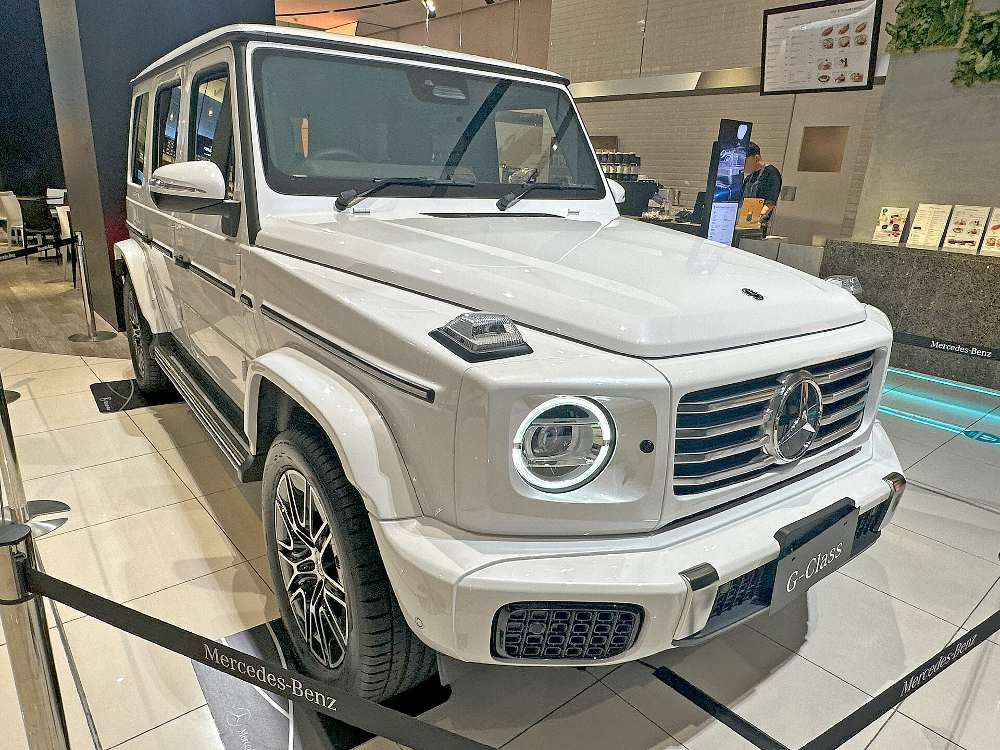
写真の出典・仕様足回りや操作系の世代交代と、変えずに残した形を調べます。現行車の写真と中古の旧世代を混同せず、世代ごとに何を選び、何を引き受ける車なのかを整理します。
公開日未定構造変更が舗装路、悪路、車内空間にどう関わるかを調べます。90・110・130を混ぜず、110の年式・足回り・動力源ごとに、購入前に確かめる差を整理します。
公開日未定 写真の出典・仕様
写真の出典・仕様プラドとの関係、300との共通設計、地域別の動力源を追います。「原点回帰」というメーカーの言葉と、寸法・装備・使い勝手から確かめられる変化を並べます。
公開日未定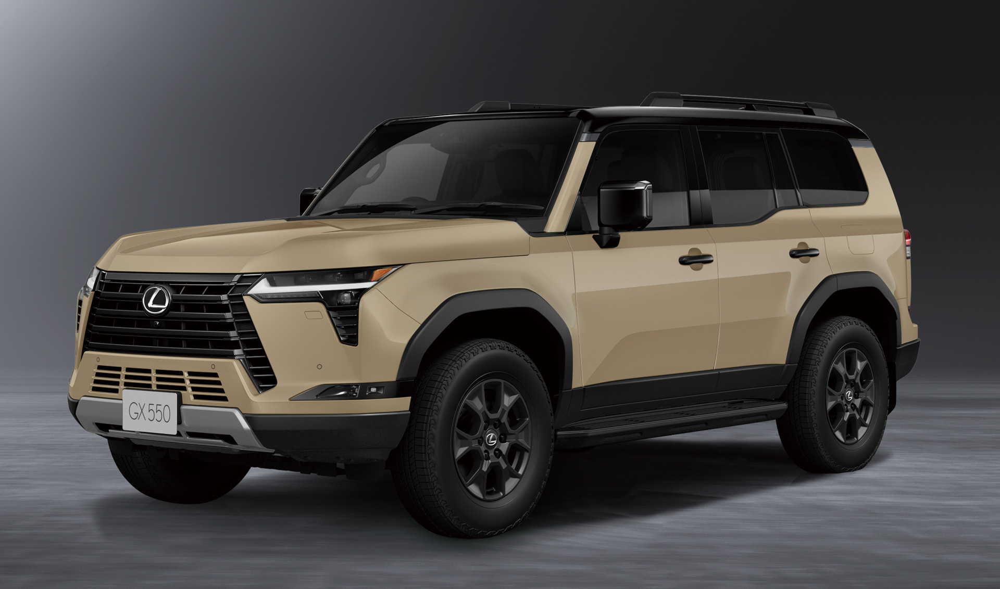
写真の出典・仕様250・LXとの関係を、骨格、動力源、内装、用途別装備から調べます。価格差をそのまま優劣とせず、日本仕様のグレードと入手条件を特定して比較します。
公開日未定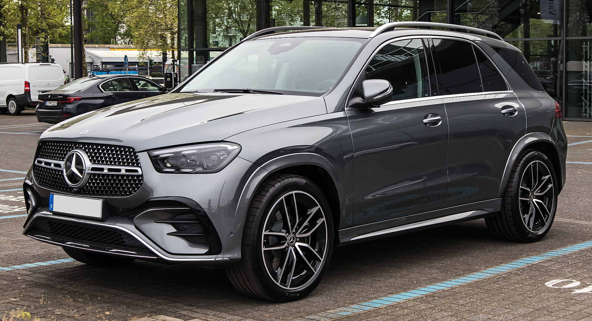
写真の出典・仕様GLC・GLS・X5との位置関係を、世代、座席構成、足回りで調べます。大きさが何に使われているのかを確認し、同じGLEでも仕様によって変わる性格を整理します。
公開日未定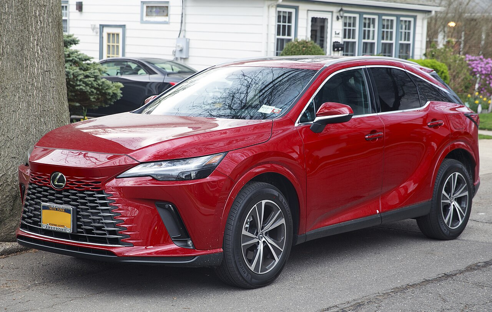
写真の出典・仕様V6からの変化と現行の各動力システムを調べます。RXという名前で一括評価せず、世代とグレードによって走り・静かさ・保有条件がどう違うかを読み解きます。
公開日未定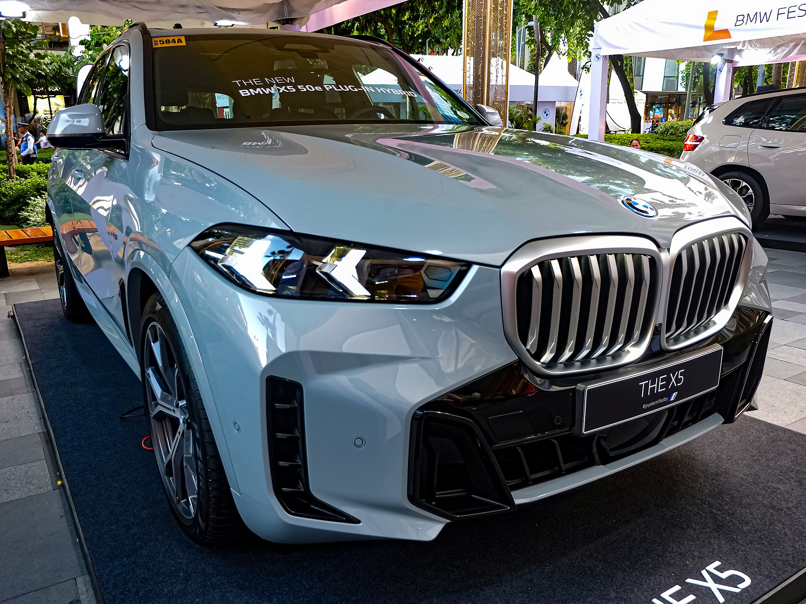
写真の出典・仕様初代の位置付けから現行世代までの設計の変化を追います。動力源と改良前後の操作系を区別し、走りの評判がどの仕様の何を評価したものかを確かめます。
公開日未定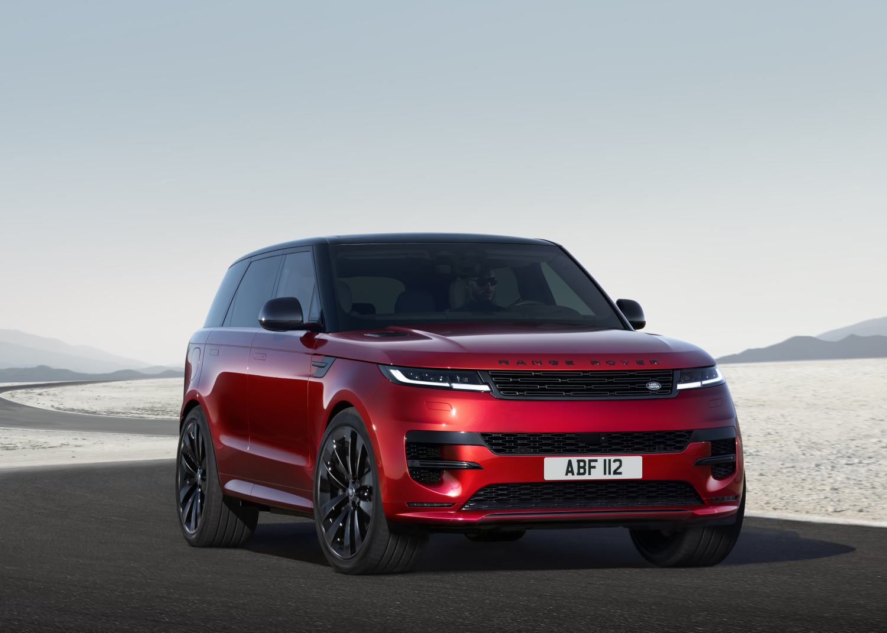
写真の出典・仕様旗艦レンジローバーとの基盤・寸法・足回りの関係を調べます。「スポーツ」という名が、単なる外観や小型化を超えて何を意味するのかを世代別に追います。
公開日未定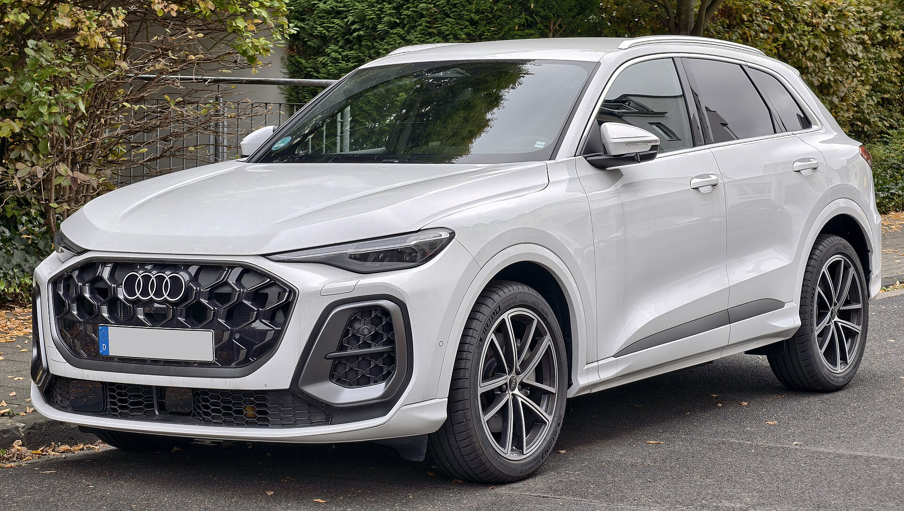
写真の出典・仕様縦置き設計と四輪駆動の役割を調べます。世代・動力源による機構差を明らかにし、ブランド名のquattroだけでは読み取れない選択を整理します。
公開日未定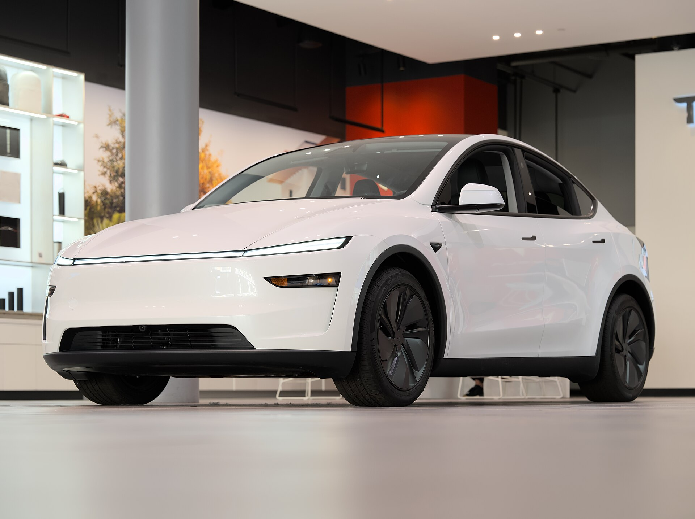
写真の出典・仕様車体のパッケージ、ソフト更新、充電、販売・修理のつながりを調べます。年次の変更点と日本での利用条件を分け、従来の車との違いを具体的に追います。
公開日未定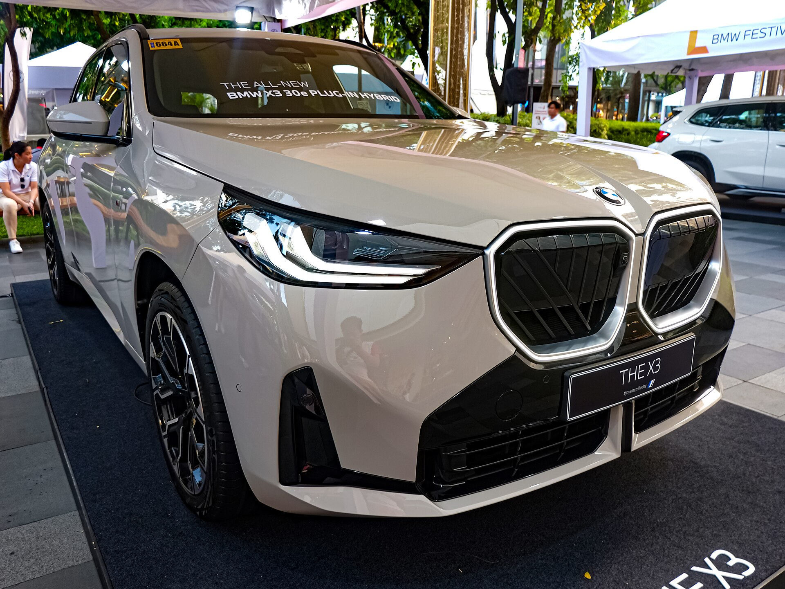
写真の出典・仕様現行と先代後期を、寸法、動力源、内装・操作系の変更から比べます。新車と中古のどちらが得かを一律に決めず、何を重視すると選択が変わるかを確かめます。
公開日未定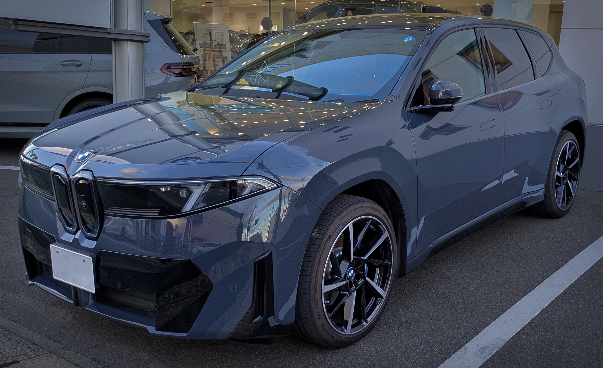
写真の出典・仕様旧iX3と新世代の設計の違いを、電池、充電、車内空間、操作系から調べます。海外発表値と日本で使える条件を区別し、待つ価値と未確認の点を整理します。
公開日未定初代からの位置付けと現行世代の設計を調べます。購入候補外という履歴は残しつつ、外した理由を推測せず、この車が重視する価値と比較軸を整理します。
公開日未定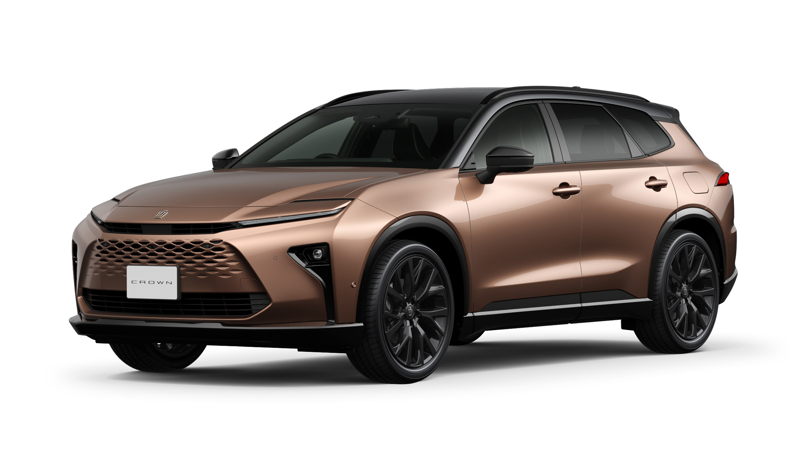
写真の出典・仕様クラウン各車の役割と、エステートの床・荷室・座席構成を調べます。名前から従来のワゴンを想定せず、日本の市販仕様で車高や積載の意味を確かめます。
公開日未定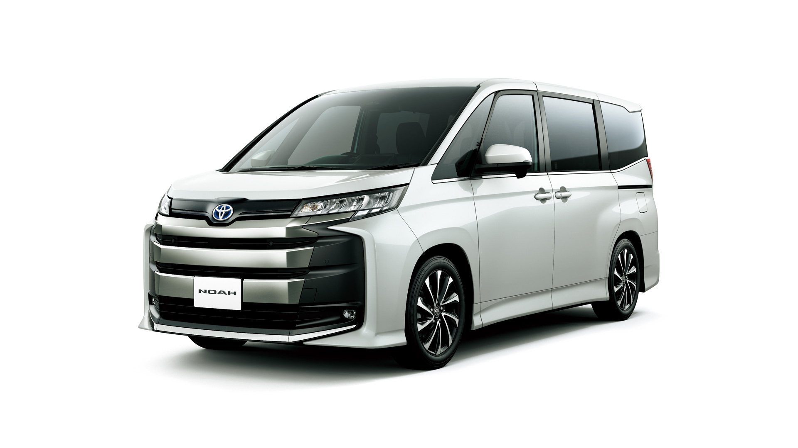
写真の出典・仕様床、ドア、座席配置、車体幅の関係を調べます。便利という一般論にとどめず、SUVとは異なるパッケージ上の選択と、グレードで変わる条件を読み解きます。
公開日未定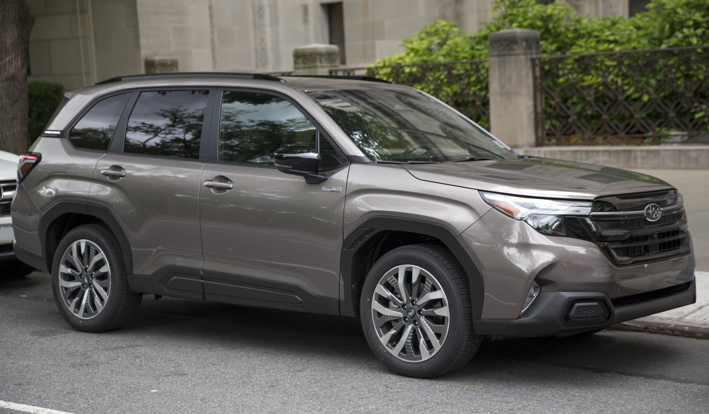
写真の出典・仕様世代ごとの設計とハイブリッド化の変化を追います。雪道での評判をタイヤや地域差から切り離さず、視界・空間・動力性能のバランスを資料で確かめます。
公開日未定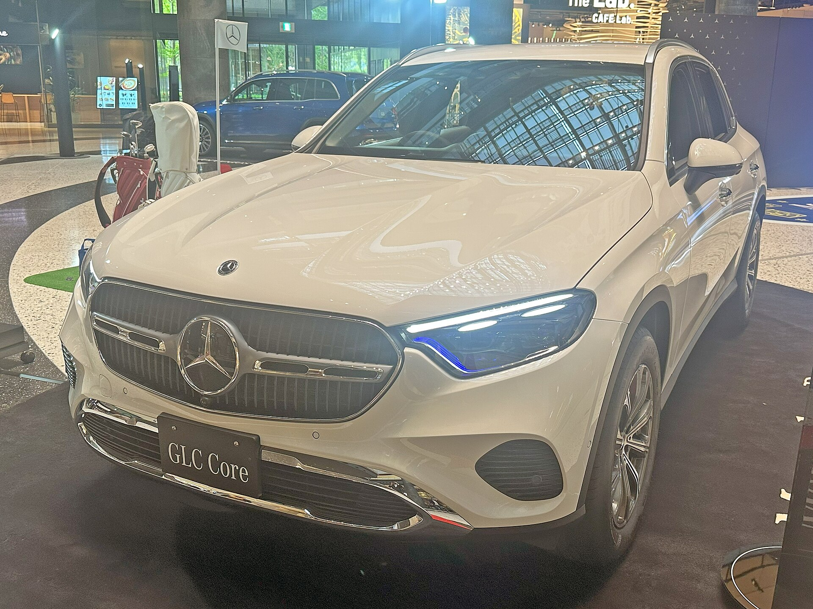
写真の出典・仕様動力源、後輪操舵、サスペンションの組み合わせを調べます。標準装備と選択装備を混ぜず、同じGLCの価格差がどの体験につながるのかを検証します。
公開日未定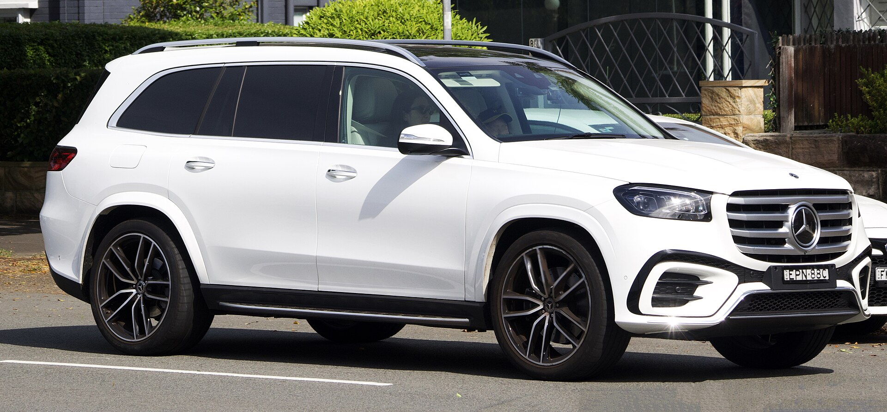
写真の出典・仕様各列の座席と荷室、足回り、GLC・GLEとの役割の違いを調べます。車格の印象に頼らず、大きな車体から得られる価値と、使う環境の制約を並べて考えます。
公開日未定 写真の出典・仕様
写真の出典・仕様200系からの変更、250との関係、グレードごとの足回りと動力源を追います。メーカーが旗艦に求める役割と、日本で所有する際に確認すべき条件を分けます。
公開日未定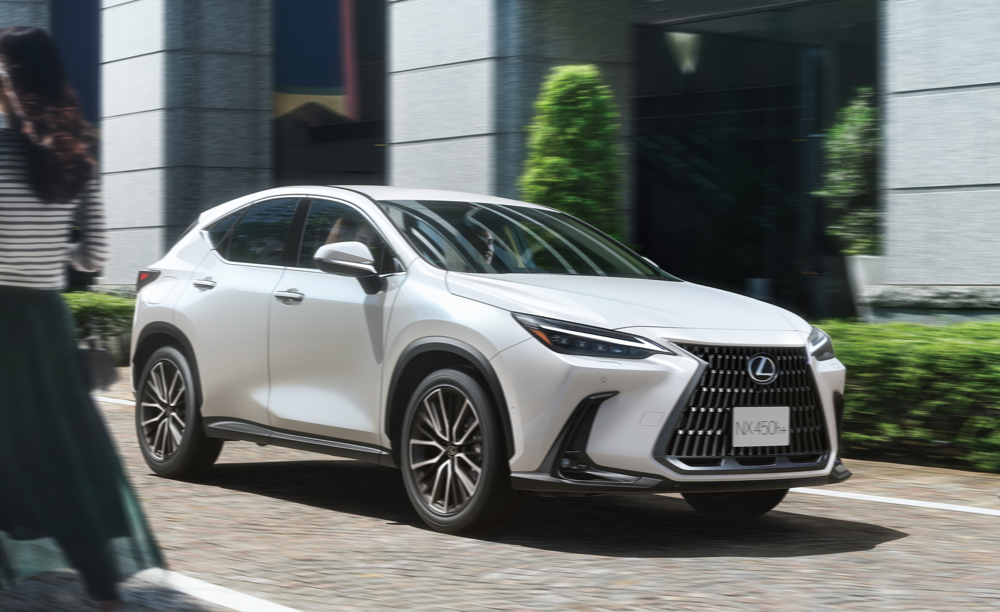
写真の出典・仕様共通する基盤と、NX独自の車体・内装・制御を調べます。初期型と改良後の違いも追い、RXとの大小関係だけでは見えない選ぶ理由を探ります。
公開日未定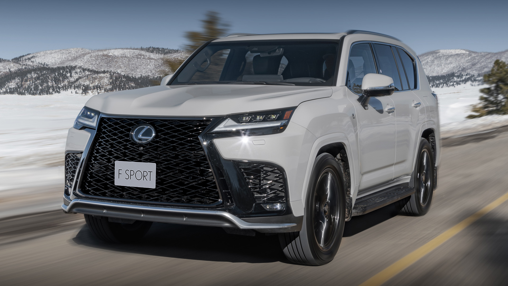
写真の出典・仕様ランクル300との共通点と、内装・足回り・動力源の違いを調べます。高級さの印象と測定できる差を分け、座席構成やハイブリッド追加による変化も確認します。
公開日未定造形、操作系、居住空間の関係と改良の履歴を調べます。美しさのために何を選択したのかを資料と複数の評価から探り、見た目だけで判断しない比較軸を作ります。
公開日未定写真の出典・仕様共通基盤の上で足回りや制御をどう変えたのかを調べます。オプションの有無と世代を明示し、走りの評価と購入時に必要な予算を同じ仕様で考えます。
公開日未定 写真の出典・仕様
写真の出典・仕様車体、動力源、画面・ソフトの更新履歴を追います。長寿モデルだから熟成しているとは決めず、残った設計と変わった部分を分けて新旧の購入条件を考えます。
公開日未定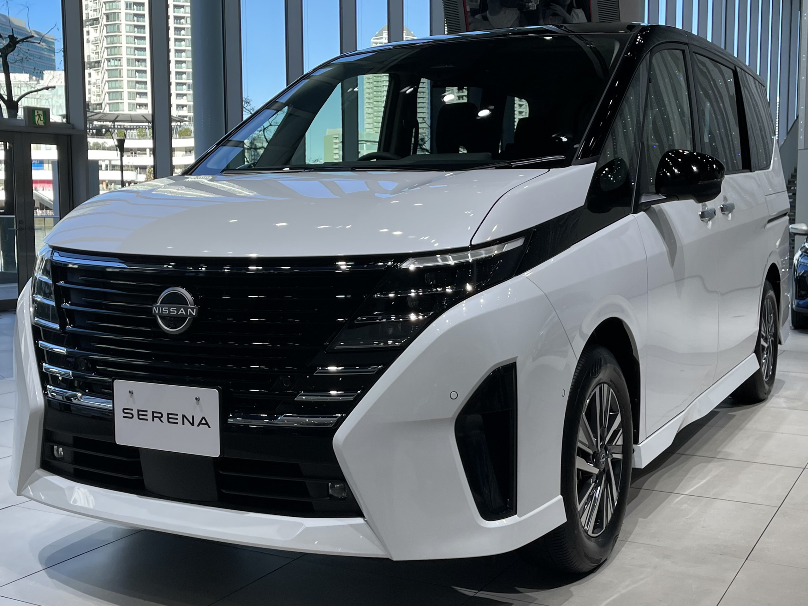
写真の出典・仕様発電と駆動の構成、バックドア、座席と運転支援の設計を調べます。グレードや世代の違いを明示し、日常の操作の裏側でどんな機構が働くかを読み解きます。
公開日未定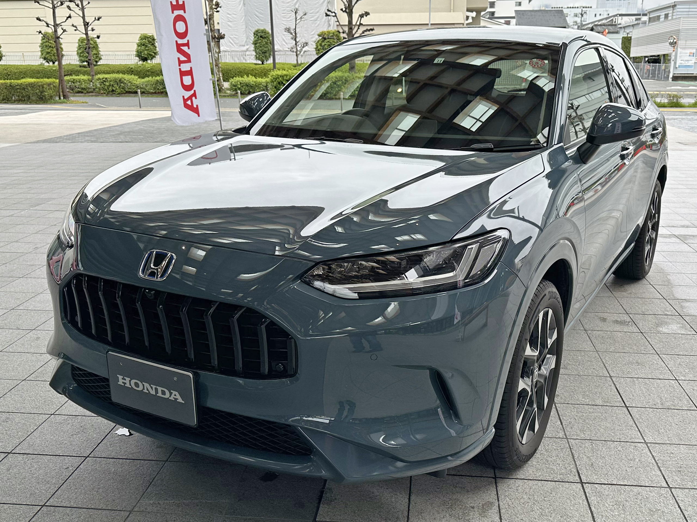
写真の出典・仕様他のホンダ車との設計上の関係と、動力源・座席・車体の組み合わせを調べます。メーカーの狙いと試乗評価を分け、他のSUVと比較すべき点を探ります。
公開日未定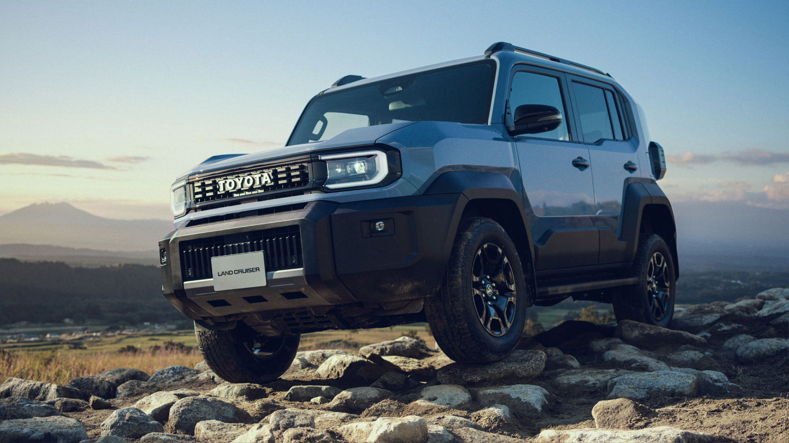
写真の出典・仕様他のランドクルーザーや旧FJクルーザーとの関係を、成り立ちと構造から調べます。日本の市販仕様に資料をそろえ、寸法を小さくする選択が用途にどう効くかを検証します。
公開日未定どこから来て、何に賭けているのか。企業とブランドの関係も読み解きます。
フルラインの商品構成、グループ各社の開発・生産分担、技術投資の考え方を調べます。TOYOTAの広い車種群を束ねる仕組みを、LEXUS固有の物語とは分けて読みます。
公開日未定設立時の狙い、品質や販売体験の作り方、親会社との役割分担を追います。高級さという言葉を具体的な設計・工程・接点に分け、ブランドが築いたものを調べます。
公開日未定商品階層と高価格帯重視の戦略が、開発・販売にどう表れているかを調べます。長い歴史の語りと現在の経営方針を分け、SUV群の位置付けを整理します。
公開日未定縦置き・横置き・専用EV基盤をひとくくりにせず、商品ごとの設計と会社の技術投資を追います。駆動方式を越えて残そうとしている価値を探る回です。
公開日未定JLR内の位置付けを確認したうえで、旧型から90・110・130などへの系譜を追います。JLR全体のブランド再編とは分け、DEFENDERという名前が担う役割を調べます。
公開日未定初代からの歴史と各モデルの役割を調べます。DEFENDERやJLR全体の経営戦略とは分け、RANGE ROVERが高級SUV像をどのように作ったかを検証します。
公開日未定VWグループ内での技術分担、四輪駆動、内外装の思想を追います。共通基盤を使うことと独自性の関係を、具体的な開発資料と製品から読み解きます。
公開日未定写真の出典・仕様カイエン導入前後の経営と製品の変化をたどります。初回の特注色特集とは分け、スポーツカー企業がSUVを自社の物語へ組み込む過程を調べます。
公開日未定製品、ソフト、充電、販売と修理を一体で考える仕組みを追います。将来の約束と現在日本で使えるものを分け、従来メーカーとの事業構造の違いを調べます。
公開日未定提携による技術共有と自社で担う開発領域を公式資料から追います。会社の資本関係を独立性の有無へ短絡させず、規模と設計の選択を読み解きます。
公開日未定写真の出典・仕様Volvo CarsとGeelyの関係、開発・生産拠点、安全に関する研究を調べます。国籍のイメージから品質を推測せず、設計と経営の具体的な分担を確かめます。
公開日未定公表された再建計画と商品・技術の関係を追います。経営上の課題と購入車の保証・整備を直結させず、日本の利用者に確認できる影響を整理します。
公開日未定二輪・四輪の事業、地域ごとの市場、技術投資の選択を調べます。国内ラインナップだけでは見えない会社全体と、一台の設計の関係を読み解きます。
公開日未定該当する企画はありません。検索語やテーマを変えてください。